Toward Trustworthy Robot-Assisted Sliding Palpation for Shallow Vessel Localisation with a Calibrated Digital Twin
Abstract
Reliable localisation of shallow subsurface vessels matters for safe robot-assisted venous access and vessel-aware manipulation, but collecting diverse tactile data on physical hardware is costly, slow, and can degrade soft vision-based tactile sensors. We present a robot-assisted sliding-palpation framework in which a calibrated digital twin generates labelled tactile sequences, reducing dependence on real-world data collection. The twin models sensor–vessel contact, is calibrated against real palpation trajectories by Bayesian-optimisation-based domain adaptation, and is randomised over sliding direction and contact conditions. A spatio-temporal graph neural network trained on simulated marker trajectories performs per-node vessel classification and yields a human-verifiable top-view localisation map through 2D-to-3D-to-2D geometric projection. Using three datasets (Sim, Silicone, and Meat, the latter a raw-meat phantom with vessel models at depths of 0–30 mm) we evaluate four [train]→[test] models: Sim→Sim, Sim→Silicone, Sim→Meat, and Meat→Silicone. The calibrated twin, validated on four canonical interactions, yields a simulated-to-real marker-alignment MAE of 0.50 mm at the point of deepest contact. After reprojection onto a 1 mm top-view grid, with each model's decision threshold set to favour few false alarms over high sensitivity, predicted vessel pixels lie on average 1.05–5.49 mm from the nearest true vessel pixel across the four models (1.05–1.31 mm for all but Sim→Meat, whose larger domain shift marks the current limit of simulation transfer). These results demonstrate progress toward trustworthy tactile palpation through calibrated simulation, interpretable localisation, and transparent reporting of cross-domain degradation. Code, model weights, and data are publicly available on GitHub and Zenodo.
Real datasets: experimental data collection
From the shallow-vessel-palpation-robot-control repository (videos/).

Annotated real datasets
From the shallow-vessel-palpation-simulator-and-AI repository (videos/), as are the simulator and prediction videos below.
Every frame of every recording, stepped through with the annotation viewers. Silicone: the clicked vessel points. Meat: per-marker labels (red = vessel present, green = absent).
Sensor mesh: the ViTacTip finite-element model in Gmsh
The tetrahedral mesh of the ViTacTip sensor that the digital twin deforms, exactly as Gmsh draws it (docker/sensor_mesh_screenshots.sh). The sensor's base lies in the xy plane and its dome points along +z; it is 40 mm across: a spherical dome (the contact surface, green) on a 19 mm-radius shell (orange) above a 20 mm-radius base ring (yellow, cyan step) with a flat underside (blue) where the mesh is fixed to the rigid mount. The colours are Gmsh's per-surface colouring, not materials. All three views are from the +x side (the axis triad in each corner shows the orientation): level with the sensor, then with the camera raised and lowered to look at it from 45° above and 45° below.
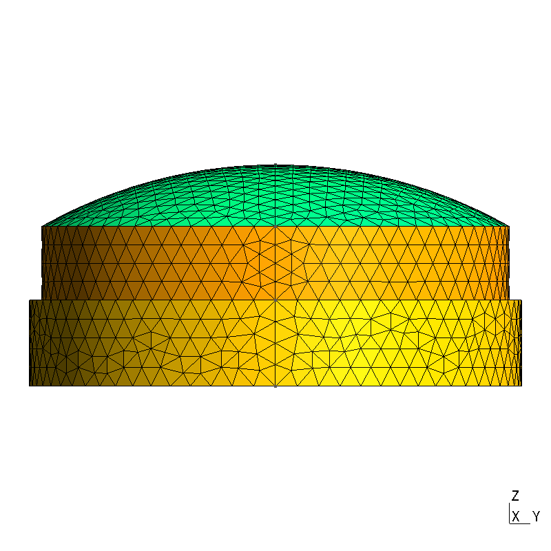
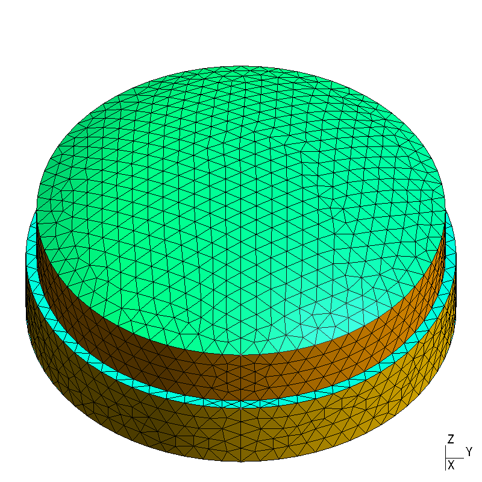
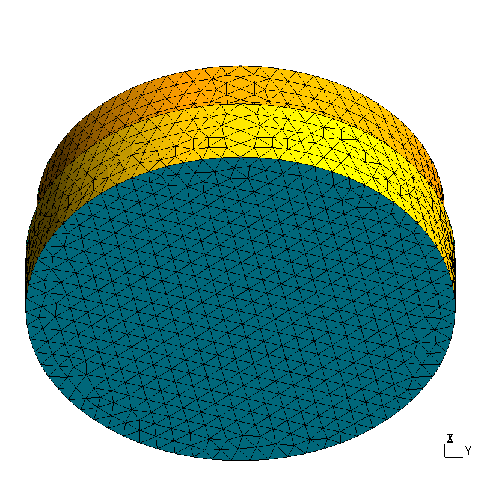
Simulator: the sensor–phantom interactions
Recorded from the digital twin's own camera at the calibrated parameters (sensor Young's modulus 881 kPa, sensor–vessel normal stiffness 9.5 × 10⁴ N/m). Sensor green, phantom blue, vessel yellow. The symbols in each caption say where that interaction is used: 🔧 domain adaptation — fitting the Bayesian-optimisation model; 📏 domain adaptation — verifying the alignment of the fitted configuration against real-world data; 🗂️ collecting the Sim dataset.
🔧 = used to fit the Bayesian-optimisation model (each BO iteration replays A1 and A2); 📏 = used to verify the fitted configuration's marker alignment against the four real reference interactions (A2, B1–B3, all vessel-free); 🗂️ = used to collect the Sim training dataset (the published dataset is slides only, A1 and A2 alternating; B1–B3 can be collected too but are not part of it).
Simulator: domain randomisation
Dataset collection randomises exactly three things per simulated trial — the slide heading and the two sensor–vessel contact coefficients — and nothing else; every other parameter is as in the calibrated twin above. One vessel-present slide per configuration, each varying one parameter while the other two sit at the midpoint of their range (θ = 0°, kₙ = 2.75 × 10⁴ N/m, cₙ = 50 N s/m). These trajectories are used exclusively for Sim dataset collection (🗂️). The three heading videos are filmed from directly above the phantom (camera looking straight down the z-axis, +y up the image), so the slide runs from the bottom of the frame to the top and the heading offset shows as a sideways drift; the vessel (yellow) runs left–right across the phantom (blue). The four contact-coefficient videos use the usual side view (camera on the −x side looking along +x, z up), in which the vessel is seen end-on as a yellow disc.
θ = slide heading, the yaw of the slide path about the vertical axis from the nominal direction straight across the vessel, drawn uniformly in ±15°; kₙ = sensor–vessel contact normal stiffness, drawn uniformly in [5 × 10³, 5 × 10⁴] N/m; cₙ = sensor–vessel contact normal damping, drawn uniformly in [0, 100] N s/m. Recorded by docker/record_domain_randomisation_videos.sh.
Per-frame GNN predictions
The prediction viewer on each model's best-of-five instance: ground truth, hard prediction, confusion (green = both say vessel, red = missed vessel, blue = false alarm, grey = neither), soft prediction, metadata. Every central frame of every trial for the real datasets. For Sim → Sim, ten held-out simulated trajectories: seven with the vessel under the sweep and three without, each drawn at random (fixed seed) from the test split and shown interleaved — present, present, absent, present, present, absent, present, present, absent, present (trajectories 0474, 0478, 0463, 0430, 0458, 0485, 0490, 0488, 0469, 0450). The top-view vessel maps below are drawn from these same trajectories, in this same order.
Top-view vessel maps
The bird's-eye localisation maps of the same four models (docker/website_vessel_maps.sh). Every per-marker prediction of the sensor's tactile image is lifted to 3D through the fisheye camera model, moved into the world frame with the sensor pose (robot kinematics for the real datasets, the simulator's own pose for Sim), and dropped onto a top-view grid of the phantom at 1 px = 1 mm (the 2D→3D→2D projection); the maps are shown here enlarged five times, so each 5 × 5 block is one map pixel. Each model's decision threshold is chosen to keep the pixel-level precision at 0.9 (a predicted pixel counting as correct within 3 mm of a true pixel) while maximising recall — few false alarms over high sensitivity; for Sim → Meat that precision is unreachable and the F1-optimal threshold is used instead. Legend: the four colours compare the thresholded prediction with the ground truth pixel by pixel — green = both say vessel (a correctly found vessel pixel), red = the ground truth says vessel but the prediction does not (a missed vessel), blue = the prediction says vessel but the ground truth does not (a false alarm), black = neither (no vessel predicted and none present — this includes everything the sensor never swept, and the whole map when a vessel-free trajectory yields no false alarm). The ground truth is the test data's own per-marker labels reprojected exactly like the predictions (manual video annotation for Silicone, robot kinematics for Meat, the simulator's vessel projection for Sim), so it is a set of marker points rather than a filled vessel. These maps are made from exactly the same trajectories as the frame-by-frame prediction videos above: for Sim → Sim the ten held-out trajectories of the Sim → Sim video, for Sim → Meat the ten Meat trials of the Sim → Meat video, and for Sim → Silicone and Meat → Silicone the same silicone recordings as their videos. Where a model has several maps (Sim → Sim, Sim → Meat) they are presented in exactly the same order as the trajectories in the corresponding frame-by-frame prediction video — map 1 is the video's first trajectory, map 10 its last.
Sim → Sim: ten held-out simulated trajectories (one map each)
The same ten trajectories as the Sim → Sim prediction video, in the same order (7 vessel-present, 3 vessel-absent, interleaved). Each map is one slide of the sensor across the phantom; the vessel-absent maps are entirely black because the model raised no false alarm along those sweeps.
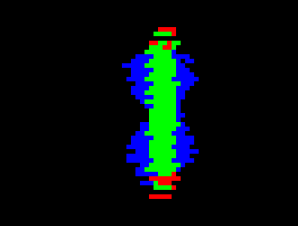
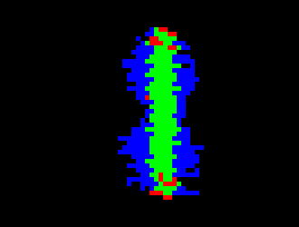

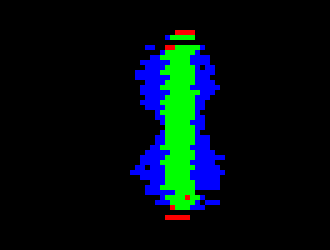
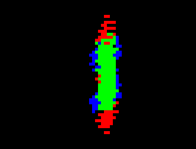
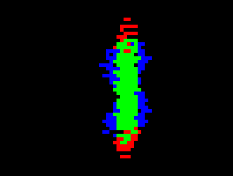
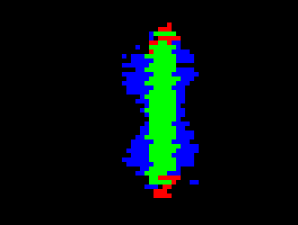

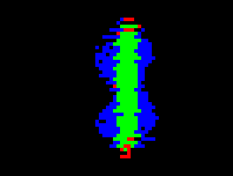
Sim → Silicone: the silicone phantom (one map)
One map for the whole silicone phantom, which the sensor scans in a snake-like pattern (five parallel trajectories, each swept in both directions — the ten sweeps of the Sim → Silicone video), 180 × 100 mm.
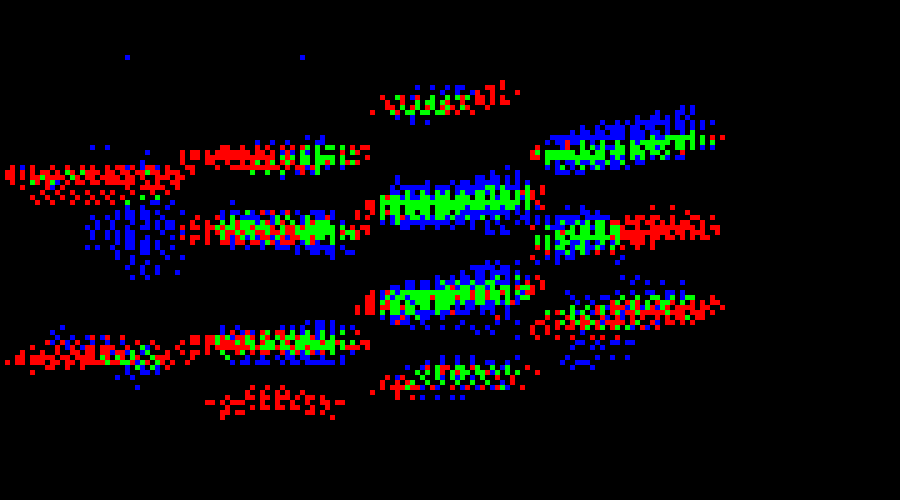
Sim → Meat: ten Meat trials (one map each)
The same ten trials as the Sim → Meat prediction video, in the same order (the dataset's sorted trial order). Every trial is a single straight slide of the same length, so all ten maps share one grid.
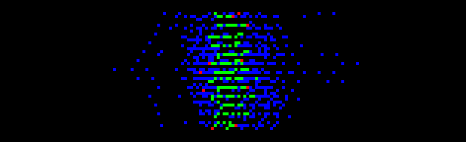
1-metal-straw-beneath-1-steak-20260228-232013)1-metal-straw-beneath-2-steaks-20260228-232632)1-metal-straw-beneath-3-steaks-20260228-233031)1-metal-straw-beneath-4-steaks-20260228-233454)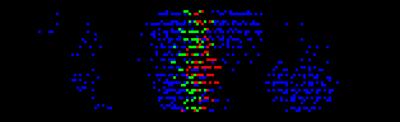
1-metal-straw-beneath-6-steaks-20260228-234337)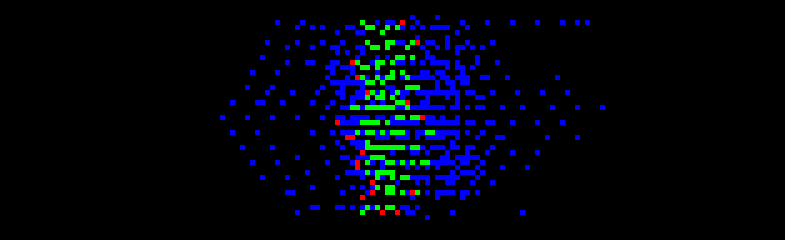
1-metal-straw-on-top-20260228-230937)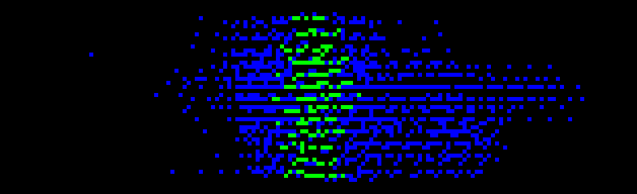
1-silicone-straw-beneath-2-steaks-20260301-001457)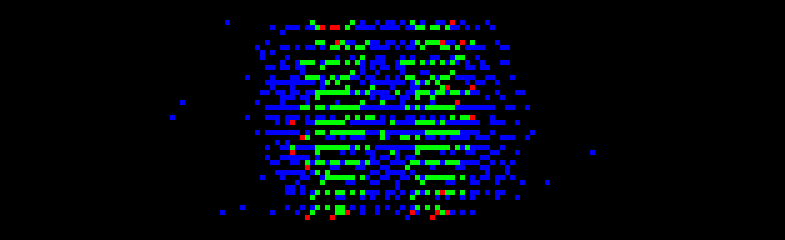
2-metal-straws-beneath-2-steaks-20260228-235749)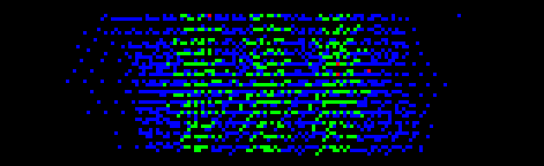
3-metal-straws-beneath-2-steaks-20260301-000849)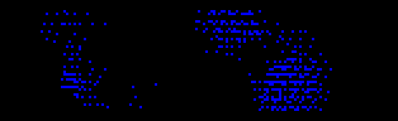
no-straw-20260228-234824)Meat → Silicone: the silicone phantom (one map)
The same silicone sweeps as the Meat → Silicone video, mapped by the meat-trained model.
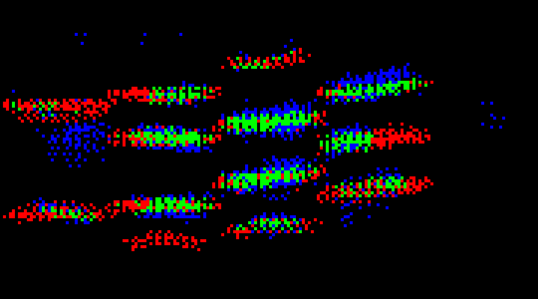
Code and data
- github.com/piotr-blaszyk/shallow-vessel-palpation-simulator-and-AI — main repository: digital twin, domain adaptation, dataset generation, GNN training and evaluation, all figures and tables.
- github.com/piotr-blaszyk/shallow-vessel-palpation-robot-control — robot control and synchronised tactile-video capture on the DOBOT Magician E6.